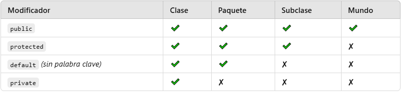

11 Encapsulamiento
El encapsulamiento es uno de los pilares fundamentales de la Programación Orientada a Objetos (POO). Se refiere a la capacidad de ocultar los detalles internos de un objeto y exponer solo lo necesario para su funcionamiento. Esto asegura que los datos del objeto estén protegidos de accesos no autorizados y se gestionen a través de métodos controlados.
11.0.0.1 Objetivos de Aprendizaje
Al finalizar esta lección, los estudiantes podrán:
Comprender el concepto de encapsulamiento y su importancia en POO.
Implementar encapsulamiento en Java utilizando modificadores de acceso.
Diseñar clases con atributos privados y métodos públicos (getters y setters).
Analizar casos prácticos que demuestren la ventaja del encapsulamiento.
11.0.1 Concepto de Encapsulamiento
Definición:
El encapsulamiento consiste en ocultar los atributos de una clase (haciéndolos privados) y proporcionar acceso a ellos mediante métodos públicos específicos llamados getters (obtener) y setters (establecer).
public class Persona {
// Atributos privados (ocultos)
private String nombre;
private int edad;
// Métodos públicos para acceder a los atributos
public String getNombre() {
return nombre;
}
public void setNombre(String nombre) {
this.nombre = nombre;
}
public int getEdad() {
return edad;
}
public void setEdad(int edad) {
if (edad > 0) { // Validación básica
this.edad = edad;
} else {
System.out.println("La edad debe ser positiva.");
}
}
}11.0.2 Modificadores de Acceso
Java ofrece diferentes modificadores de acceso para controlar la visibilidad de atributos y métodos:

11.0.3 Beneficios del Encapsulamiento
Seguridad: Protege los datos de modificaciones no deseadas.
Control: Permite agregar reglas o validaciones al acceso de datos.
Flexibilidad: Facilita cambios internos en la clase sin afectar al resto del programa.
Modularidad: Promueve un diseño más claro y organizado.
11.0.4 Implementación de Encapsulamiento en Java
11.0.4.1 Pasos para implementar encapsulamiento:
Declarar los atributos de la clase como
private.Crear métodos públicos
getysetpara acceder y modificar los atributos.Opcionalmente, agregar validaciones o lógica en los métodos
set.
Ejemplo con validaciones:
public class CuentaBancaria {
private double saldo;
public double getSaldo() {
return saldo;
}
//método depositar
public void depositar(double cantidad) {
if (cantidad > 0) {
saldo += cantidad;
} else {
System.out.println("La cantidad debe ser positiva.");
}
}
//método retirar
public void retirar(double cantidad) {
if (cantidad > 0 && cantidad <= saldo) {
saldo -= cantidad;
} else {
System.out.println("Operación inválida. Fondos insuficientes o cantidad negativa.");
}
}
}public class Main {
public static void main(String[] args) {
CuentaBancaria cuenta = new CuentaBancaria();
// Depósito
cuenta.depositar(500);
System.out.println("Saldo después del depósito: " + cuenta.getSaldo());
// Retiro válido
cuenta.retirar(200);
System.out.println("Saldo después del retiro: " + cuenta.getSaldo());
// Intento de retiro inválido
cuenta.retirar(1000);
}
}11.0.5 Aplicaciones Prácticas del Encapsulamiento
11.0.5.1 Caso Práctico 1: Gestión de estudiantes
Desarrolla una clase Estudiante que almacene el nombre, la matrícula y el promedio del estudiante. Asegúrate de que:
El promedio esté siempre entre 0 y 10.
El número de matrícula no pueda modificarse una vez establecido.
11.0.5.2 Solución:
public class Persona {
private String nombre;
private int edad;
// Constructor público usa los setters
public Persona(String nombre, int edad) {
setNombre(nombre); // Usa el setter para inicializar con validación
setEdad(edad); // Usa el setter para inicializar con validación
}
public String getNombre() {
return nombre;
}
public void setNombre(String nombre) {
if (nombre != null && !nombre.isEmpty()) {
this.nombre = nombre;
} else {
throw new IllegalArgumentException("El nombre no puede ser nulo o vacío.");
}
}
public int getEdad() {
return edad;
}
public void setEdad(int edad) {
if (edad > 0) {
this.edad = edad;
} else {
throw new IllegalArgumentException("La edad debe ser positiva.");
}
}
}public class Main {
public static void main(String[] args) {
Persona persona1 = new Persona("Juan Pérez", 25);
System.out.println("Persona creada: " + persona1.getNombre() + ", " + persona1.getEdad() + " años");
// Modificar los atributos usando los setters
persona1.setNombre("Ana López");
persona1.setEdad(30);
System.out.println("Nombre actualizado: " + persona1.getNombre());
System.out.println("Edad actualizada: " + persona1.getEdad());
}
}11.0.6 Datos Inmutables
Los datos inmutables son aquellos cuyo estado no puede cambiar después de su creación. En la Programación Orientada a Objetos (POO), las clases inmutables son especialmente útiles porque proporcionan seguridad, simplicidad y consistencia. Al diseñar una clase inmutable, garantizamos que sus atributos no puedan ser modificados una vez que se han inicializado.
Un dato o clase es inmutable si:
Sus atributos no pueden ser modificados después de ser inicializados.
No se proporcionan métodos que permitan cambiar el estado del objeto (como setters).
El acceso a los atributos se realiza de manera controlada, generalmente a través de getters.
11.0.7 Uso de final con Variables
Cuando declaras una variable como final, su valor no puede cambiar después de ser inicializado. Esto es muy útil para garantizar que ciertos datos permanezcan constantes durante la ejecución del programa.
public class EjemploFinalVariable {
public static void main(String[] args) {
final int constante = 10; // Declaración de una variable final
System.out.println("Valor de constante: " + constante);
// constante = 20; // Esto genera un error de compilación: no se puede modificar
}
}11.0.8 Uso de final con Métodos
Cuando un método es declarado como final, significa que no puede ser sobrescrito en clases que heredan de la clase donde se define el método.
class Padre {
public final void metodoFinal() {
System.out.println("Este método no puede ser sobrescrito.");
}
}
class Hijo extends Padre {
// public void metodoFinal() {
// Esto generaría un error de compilación porque el método es final.
// }
}11.0.9 Uso de final con Clases
Cuando una clase es declarada como final, significa que no puede ser extendida (heredada) por otras clases.
public final class ClaseFinal {
public void metodo() {
System.out.println("Esta clase no puede ser extendida.");
}
}
// class SubClase extends ClaseFinal {
// Esto generaría un error porque ClaseFinal es final y no se puede heredar.
// }11.0.10 Uso de final con Atributos de Clase
Cuando declaras un atributo de clase como final, garantiza que solo puede ser asignado una vez, ya sea en su declaración o dentro del constructor.
Ejemplo
public class Persona {
private final String nombre; // Atributo final: inmutable
private final int edad; // Atributo final: inmutable
public Persona(String nombre, int edad) {
this.nombre = nombre; // Se asigna en el constructor
this.edad = edad; // Se asigna en el constructor
}
public String getNombre() {
return nombre;
}
public int getEdad() {
return edad;
}
// No hay setters porque no pueden cambiarse los valores de los atributos finales.
}11.0.11 Ejercicio Práctico
Instrucciones:
Crea una clase
Librocon los atributos:titulo(tipoString).autor(tipoString).isbn(tipoString).
Asegúrate de que todos los atributos sean inmutables.
Proporciona un constructor para inicializar los valores y métodos getter para acceder a ellos.
En la clase
Main, crea al menos dos objetosLibroy muestra sus datos por consola.